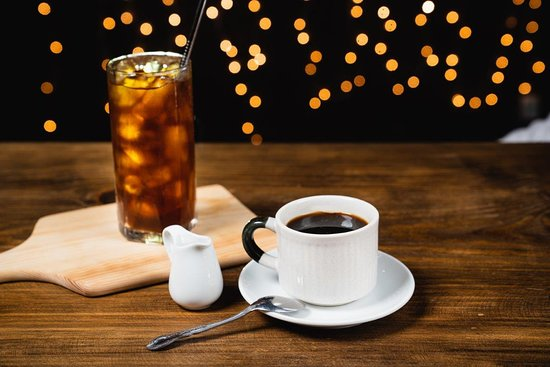

Americano
Americano is also one of the OG coffee drinks that use espresso as the main ingridients. By adding water on your
espresso, without losing its complexity and sweetnes of your espresso, but you can enjoy it for longer period of
time, the drawback is only you might lose some texture of your espresso
During World War II, American soldiers stationed in Italy felt the traditional Italian espresso was too strong
for their taste and opted for a watered-down version. They wanted a drink that tasted similar to the drip coffee
they had back in America, thus, the Americano. And here we are now.
Ingridients you need
Once you nailed the best version of your espresso, it is fairly easy to creat an Americano, all you need is:
- Espresso
- Water (Hot or cold water)
- Ice Cube, if you chose ice Americano
- Flavored syrup of your choice
How to make your Americano
A simple and easy recipe to step up your coffee expreince, and you can even customize and experiment your
coffee to make your own version of it, in this case, Americano.
How to make American step by step:
- Pour your espresso into a bigger glass, I suggest to start in double shot of espresso, which is around
32-50gr of espresso, depending on your brew ratios
- Add some water to your espresso, I suggest to pour around 100-130gr of water if you prefer ice americano
and added some ice into, and 130-150gr of water if you prefer hot americano. You can add more or less
water to your like, to get stronger result by reducing the water, and to get weaker result by increasing
the water
- To make your own version, and you need some flavor, just add some syrup of your choice
- You can even customize it to make your own uniqly americano, maybe by adding some topping, such as
adding some whip cream on top of it, or adding some jelly, or maybe adding some "boba".
- And now just enjoy it. There is no standard way to enjoy and customize americano, the limit is only your
own creativity.
Return to Top